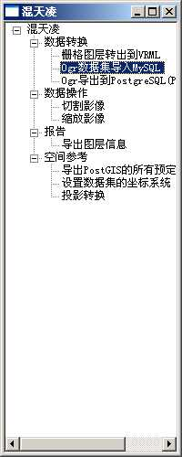
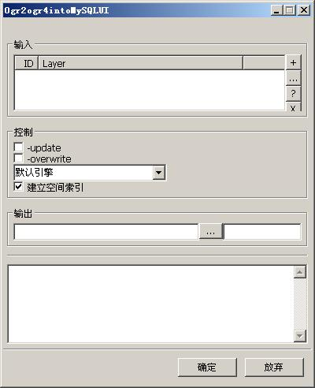

九形工具集“混天凌”
返回主索引
九形附带了一系列的工具集合，在形式上类似ESRI的ArcTools或者ArcToolBox。包括了一系列实用程序集合。是GIS分析和处理的核心。
也是九形后期的重点。
为什么给它起名为“混天凌”呢？“混天凌”是一根飘带，无形无迹，软软弱弱，为人忽视，但是却威
力无穷，翻江倒海，上天入地无所不能，冷不丁给一下谁也受不了。实用工具集不比主程序，那么引人注目，但是，工具集却是地图界面最大的补充，甚至可以在一
些应用中完全独立使用，拆开能用，合起来也能用，能力绝对是超乎想像的。故名之“混天凌”。
想GIS界大家做这做那，还不是完全就是完善自己的实用工具集而已？是时候系统一下了。这是最有创意最有挑战性最能出知识产权的一块。做不好的大家笑笑，做好了大家受益，何乐不为？
启动
有几种方法可以启动"混天凌"。
- 在你启动九形主程序的时候，会发现在数据集列表旁边就集成了工具集的标签页，这样你就可以直接使用。
- 当然，你可以独立运行“混天凌”，而不需要运行较为庞大的九形主程序。你可以直接运行$GEOSINGS_HOME/pymod/geosings/tools/gsstoolsapp.py
- 也可以启动$GEOSINGS_HOME/bin下的gssapp.py文件并在后面加上参数tools，或者lin就可以(大
小写可以不分)，如：./gssapp.py tools或者python f:/geosings/bin/gssapp.py lin。
- 当然你也可以在主控制台runGeosings.py中启动。只要输入tools就可以了。
这样你就启动了混天凌。主界面如下：

里面是实用工具集。当然现在的工具还非常少。但是慢慢会多起来的。
工具列表
下面是混天凌中的所有工具列表：
＋数据转换工具(Data Convertor)
|- 栅格图层转换到VRML(Raster to VRML)
|- 矢量图层导入MySQL(Ogr to MySQL)
|- 矢量图层导入PostgreSQL(PostGIS)(Ogr to PostgreSQL)
＋数据操作(Data Operator)
|- 切割影像(Split Raster)
|- 缩放影像(Resize Raster)
＋报表工具(Report)
|- 导出图层信息(Export Layer's Info)
＋空间参考(SpatialReference)
|- 导出PostGIS的所有预定义空间参考(Export PostGIS SpatialReference)
|- 设置数据集的坐标系统(Set coordinate system to dataset)
|- 投影转换(Project)
定制“混天凌”
混天凌也是通过配置命令来配置的。默认的配置文件在geosings.tools.ToolsSettings，包括登记函数的定义，以及初始化定义。
这个配置模块是通过在GSSCONF["GSS_TOOLS_CONF"]中配置一个列表来定义整个“混天凌”的树结构以及程序关联。所以只要能控制GSSCONF的地方就可以定制“混天凌”。这样，你也可以在.gssrc中配置以达到控制“混天凌”目录树的结构的目的，通过配置，可以定制自己的工具集外观。
配置列表结构
首先，你需要登记所有的工具名称和命令名。使用regTool函数，后面跟着两个参数，一个是工具名称，一个是工具模块命令。函数返回登记成功的工具名称。
然后根据返回的名称登记菜单,登记函数是regToolMenu后面跟着菜单路径和可用的工具名称。路径是用列表来表示的。一个文件夹就用一个列表项来表示。如果不存在，函数会自动添加，如果存在了，就会自动覆盖（所以要小心！）。后面的工具名称需要用regTool登记过的。没有登记的不行。当然可以在不相同的路径下定义相同工具，这个没有任何冲突（这也是设计GSSCONF["GSS_TOOLS_OPER"] 的原因）。
它所用的登记代码可能是这样：
_r2v = regTool("Raster To VRML","Raster2VrmlUI")
_o2m = regTool("Ogr to MySQL","Ogr2ogr4intoMySQLUI")
_o2pg = regTool("Ogr to PostgresSQL","Ogr2ogr4intoPGUI")
_sras = regTool("Split Raster","RasterSplitterUI")
_rr = regTool("Resize Raster","RasterResizerUI")
_el = regTool("Export Layer's Info",'ReportLayerInfoUI')
_epgsr = regTool("Export PostGIS SpatialReference","PostGISSrsExpUI")
_scs = regTool("Set coordinate system to dataset","SetCoorSysUI")
_prj = regTool("Project","ProjectUI")
#print GSSCONF["GSS_TOOLS_OPER"]
GTM_DATACONV = "Data Convertor"
GTM_DATAOPER = "Data Operator"
GTM_REPORT = "Report"
GTM_SR = "SpatialReference"
regToolMenu([GTM_DATACONV], _r2v)
regToolMenu([GTM_DATACONV], _o2m)
regToolMenu([GTM_DATACONV], _o2pg)
regToolMenu([GTM_DATAOPER], _sras)
regToolMenu([GTM_DATAOPER], _sras)
regToolMenu([GTM_REPORT], _el)
regToolMenu([GTM_SR], _epgsr)
regToolMenu([GTM_SR], _scs)
regToolMenu([GTM_SR], _prj)
(因为每次添加工具后，配置都会不一样，所以要看完整配置还是到那个文件中去找，这里文档只是说明结构)
菜单字典中登记的名称是英文也没有关系，如果你要自动转换到中文，就在
$GEOSINGS_HOME/pymod/geosings/locale/zh_CN 下修改geosings.po，
添加gettext翻译对应。
定制后的GSSCONF["GSS_TOOLS_CONF"]结构可能像这样
GSSCONF["GSS_TOOLS_CONF"] = [
{"Data Convertor":[
{"Raster to VRML":"Raster2VrmlUI"},
{"Ogr to MySQL":"Ogr2ogr4intoMySQLUI"},
]
},
{"Report":[
{"Export Layer's Info":'ReportLayerInfoUI'}
]
}
]
总得结构是一个列表，其中按造顺序排列了几个子菜单树。子菜单树的表达形式是一个字典。健是菜单树根结点名，值如果是下一级子菜单，就是一个列表；如果菜单是可运行的实用工具程序，则值就是这个实用工具的GUI工具名称（处于tools/ui目录下的同名的python程序）。
工具面板结构
混天凌里面的工具面板结构是统一布局的。所有的工具都是由4个部分组成的。
例如：

可以看到主面板有几个部分组成，几个部分都有静态框框住。
一个是Input（输入）。它负责所有的输入图层，具体的介绍在这里。
下面一个是Control(控制)，所有的实用工具的控制参数都由这个面板来定义。
一个是Output(输出)，处理所有输出选择，对它也有专门的介绍。
最后被一根横向分割线分割开的是一个过程打印输出框，可以把过程中的一些信息打印出来，通过打印输出，可以了解处理结果和一些过程信息。
点击"确定"，可以开始运行工具，点击"放弃"则退出GUI。
这个布局对话框是由geosings.ui.commondlg.ToolDlgTemplate下的两个类控制的。所有的控制参数面板都是继承于geosings.ui.commondlg.ToolCtrlBasePanel.ToolCtrlBasePanel类，它提供了一个可以控制的基础面板。